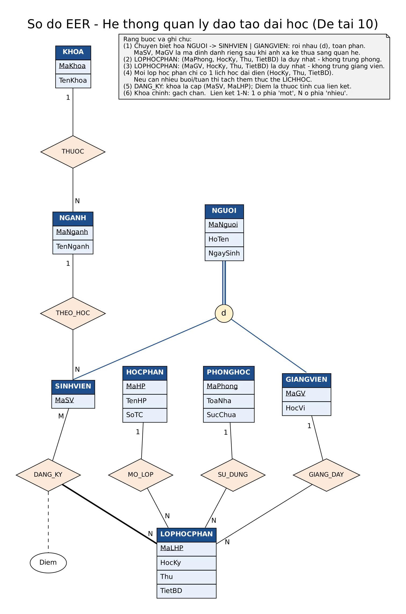

BỘ NHỎ 01 · 5 thuộc tính
Chuỗi phụ thuộc truyền dẫn
- U
- A, B, C, D, E
- F
- A → B
B → C
C → D - Khóa mong đợi
- {A, E}
HIỂU DỮ LIỆU. THIẾT KẾ TỐT HƠN.
Khám phá phụ thuộc hàm, phân rã 3NF / BCNF, kiểm tra Chase & bảo toàn phụ thuộc.
Phân tách bằng dấu phẩy. Tên thuộc tính phân biệt hoa thường.
Mỗi dòng một phụ thuộc: X -> Y. Hỗ trợ nhiều thuộc tính ở mỗi vế.
Nhập tập F₂ để kiểm tra xem F₁ có tương đương F₂ hay không.
Phân tách các quan hệ con bằng dấu phẩy hoặc ngoặc đơn.
Nhập lược đồ, chọn công cụ và bắt đầu phân tích.
Các bước suy luận sẽ xuất hiện tại đây.
DỮ LIỆU MẪU
Khám phá phụ thuộc hàm qua bài toán quản lý đào tạo.
BỘ NHỎ 01 · 5 thuộc tính
BỘ NHỎ 02 · 6 thuộc tính
Mỗi lớp học phần có một lịch học đại diện, một phòng và một giảng viên. Mỗi sinh viên có một điểm cho mỗi lớp đã đăng ký. U là lược đồ tổng hợp dùng để phân tích, không phải một bảng vật lý duy nhất.
Phụ thuộc tùy chọn MaSV, MaHP, HocKy → MaLHP không nằm trong F chính.
Kết quả tham khảo cho bộ dữ liệu mẫu, không phải kết quả của lược đồ đang nhập.

CSDL NÂNG CAO & TOÀN VẸN DỮ LIỆU
Mô phỏng kiểm tra tiên quyết (Prerequisite), sĩ số phòng & tính nguyên tử Transaction (Commit / Rollback) trên ObjectDB.
Cơ chế bảo vệ toàn vẹn: Khi sinh viên đăng ký môn học, Backend mở một Transaction trên ObjectDB để đối chiếu các ràng buộc nghiệp vụ (điều kiện môn tiên quyết, sĩ số phòng, trùng lịch). Nếu vi phạm, hệ thống tự động ROLLBACK toàn bộ giao dịch, đảm bảo tính nguyên tử (Atomicity) theo chuẩn ACID.
CSDL HƯỚNG ĐỐI TƯỢNG (OBJECTDB)
Xem lại kết quả đã phân tích và mở chi tiết khi cần.
Thực hiện một phép phân tích ở mục "Phân tích lược đồ" để lưu vết vào ObjectDB.
BẮT ĐẦU TẠI ĐÂY
Ba bước để khám phá dữ liệu của bạn.
Chuẩn bị dữ liệu
Tập thuộc tính U: nhập các tên thuộc tính cách nhau bằng dấu phẩy.
Tập phụ thuộc F: mỗi dòng là một phụ thuộc theo mẫu X -> Y.
Dữ liệu có sẵn: nhấn “Nạp dữ liệu mẫu” hoặc nhập file .txt với dòng U: và F:.
Chọn công cụ
Nhập tập thuộc tính X để tìm tất cả thuộc tính có thể suy ra thành X⁺.
Nhập X và Y để kiểm tra phụ thuộc hàm X → Y có suy ra được không.
Tìm khóa ứng viên, siêu khóa và xác định thuộc tính khóa của lược đồ.
Kiểm tra 1NF–BCNF hoặc phân rã lược đồ theo chuẩn 3NF và BCNF.
Kiểm tra phép nối của các quan hệ con có bị mất thông tin hay không.
Kiểm tra phép phân rã có giữ được toàn bộ phụ thuộc hàm trong tập F không.
Theo dõi kết quả
Nhấn nút phân tích: kết quả được backend Spring Boot tính toán.
Đọc kết luận: xem thuộc tính, khóa, dạng chuẩn hoặc quan hệ con được tách.
Mở từng bước suy luận: theo dõi quá trình lan truyền phụ thuộc và lời giải chi tiết.
POSTGRESQL NÂNG CAO & CHUẨN HÓA
Tổng hợp các kịch bản SQL động, tranh chấp 2 phiên giao dịch, thực nghiệm EXPLAIN ANALYZE và phân tích 4NF trong thư mục sql/.
1. PHÂN TÍCH DẠNG CHUẨN 4NF (PHỤ THUỘC ĐA TRỊ - MVD)
Tất cả thuộc tính đều nguyên tử (1NF) và không tồn tại phụ thuộc đa trị độc lập không tầm thường dạng X ↠ Y | Z (với X không phải siêu khóa):
Khoa, Nganh, GiangVien, Phong, HocPhan, SinhVien: khóa chính đơn xác định duy nhất mọi thuộc tính còn lại.LopHocPhan: gắn với 1 học phần, 1 giảng viên, 1 phòng và 1 lịch đại diện duy nhất.DangKy(MaSV, MaLHP, Diem): chỉ có 1 thuộc tính không khóa Diem phụ thuộc đầy đủ vào khóa ghép.2. SQL ĐỘNG CHỐNG SQL INJECTION (sql/05_Stored_Procedures_va_Functions.sql)
EXECUTE format(...) với Whitelist-- Đếm bản ghi động (chỉ cho phép sinhvien, dangky; từ chối bảng khác mã lỗi 22023)
SELECT qldt.dem_ban_ghi('sinhvien');
SELECT qldt.dem_ban_ghi('dangky');
-- Tra cứu & sắp xếp động có whitelist cột và hướng sắp xếp
SELECT * FROM qldt.fn_TraCuuDongSinhVien(1, 'diem_tb', 'DESC');3. TRANH CHẤP ĐỒNG THỜI 2 PHIÊN (sql/07_Transactions_va_Concurrency.sql)
SELECT ... FOR UPDATE)-- Chuẩn bị: đặt SiSoToiDa = 7 khi LHP2401001 đã có 6 đăng ký
UPDATE qldt.LopHocPhan SET SiSoToiDa = 7 WHERE MaLHP = 'LHP2401001';
-- [T1 - Phiên A] Giữ khóa dòng LHP2401001, đăng ký thành công (7/7), chưa COMMIT
BEGIN; CALL qldt.sp_DangKyHocPhan('SV2001004', 'LHP2401001', NULL, NULL);
-- [T2 - Phiên B] Bị chặn chờ khóa FOR UPDATE của Phiên A
BEGIN; CALL qldt.sp_DangKyHocPhan('SV2001003', 'LHP2401001', NULL, NULL);
-- [T3 - Phiên A] COMMIT nhả khóa -> [T4 - Phiên B] đếm thấy 7/7 -> từ chối an toàn.4. THỰC NGHIỆM ĐO HIỆU NĂNG (sql/08_Explain_Analyze_ThucNghiem.sql)
EXPLAIN (ANALYZE, BUFFERS): Seq Scan vs Index Scan-- 1a. Tắt Index Scan để đo Sequential Scan
SET enable_indexscan = off; SET enable_bitmapscan = off;
EXPLAIN (ANALYZE, BUFFERS) SELECT MaSV, MaLHP, Diem FROM qldt.DangKy WHERE Diem >= 8.0;
-- 1b. Bật lại Index Scan (Partial Index idx_dangky_diem)
SET enable_indexscan = on; SET enable_bitmapscan = on;
EXPLAIN (ANALYZE, BUFFERS) SELECT MaSV, MaLHP, Diem FROM qldt.DangKy WHERE Diem >= 8.0;